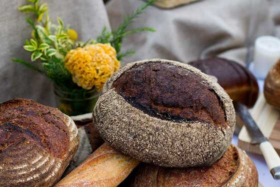
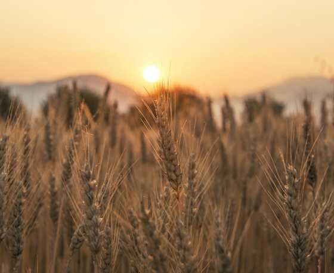
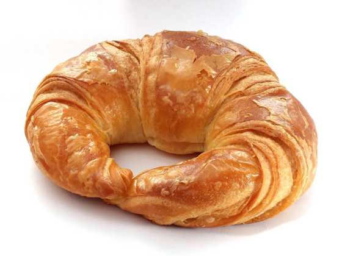
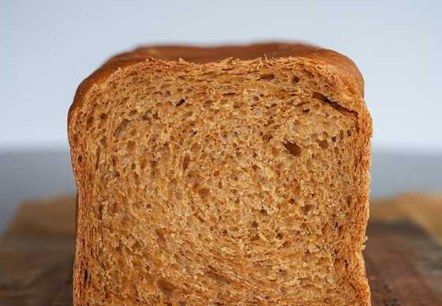
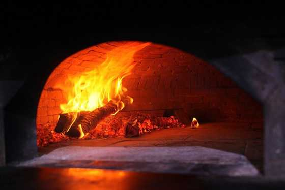
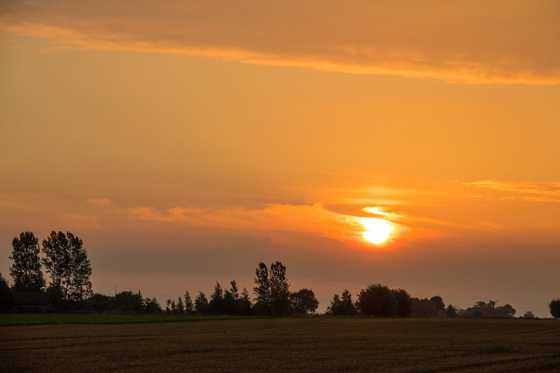

お店のこと
パンの25は、和歌山県田辺市芳養町のパン屋です。Instagramのプロフィールでは「パンの25-pannonico-」と名乗り、営業は土曜日のみ。原材料には北海道産の小麦と富田の水を使っていると紹介されています。
- 営業日土曜日のみ
- 営業時間10:30〜17:00(売り切れ次第終了)
- こだわり北海道産小麦・富田の水
上記はお店のInstagramプロフィールで確認できた内容です。店名の由来や開業のいきさつは確認できていないため、ここでは触れていません。











口コミ
イメージ例
土曜の朝に並んで買うのが楽しみになりました。小麦の香りがしっかりして、素朴でおいしいです。
イメージ例
売り切れる前に行かなくては、と思わせるパン。次の土曜も寄りたいです。
イメージ例
シンプルなパンほど水と粉の良さが出ると感じました。家族みんなで食べました。
上の口コミは制作側が作成したイメージ例であり、実際のお客様の声ではありません。
アクセス
〒646-0056 和歌山県田辺市芳養町2886-18
営業日:土曜日 10:30〜17:00(売り切れ次第終了)
電話:準備中 / Instagram @panno.25(DMは使用できないとのことです)